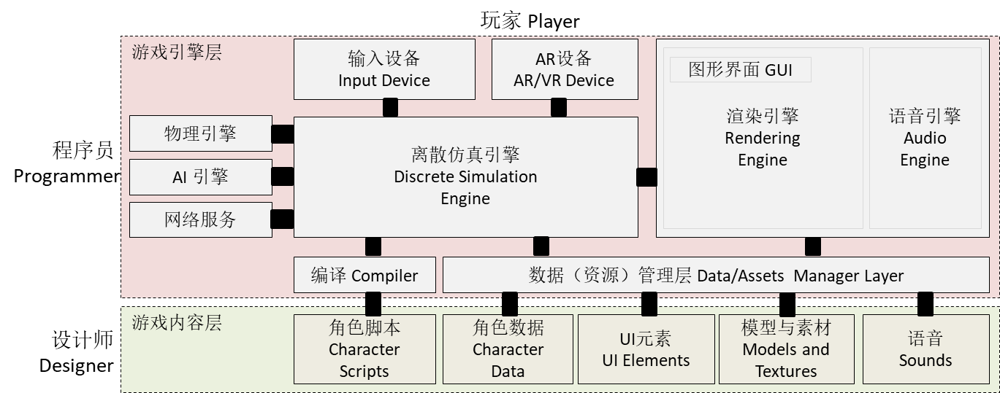
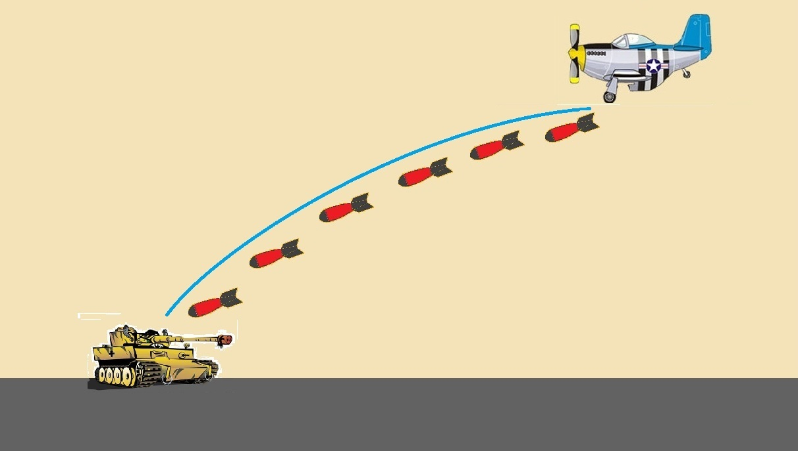
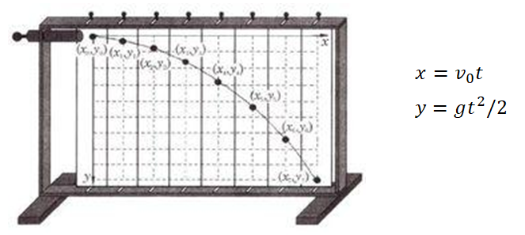
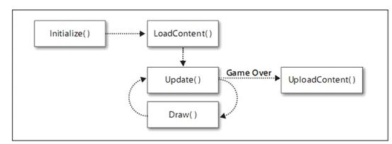
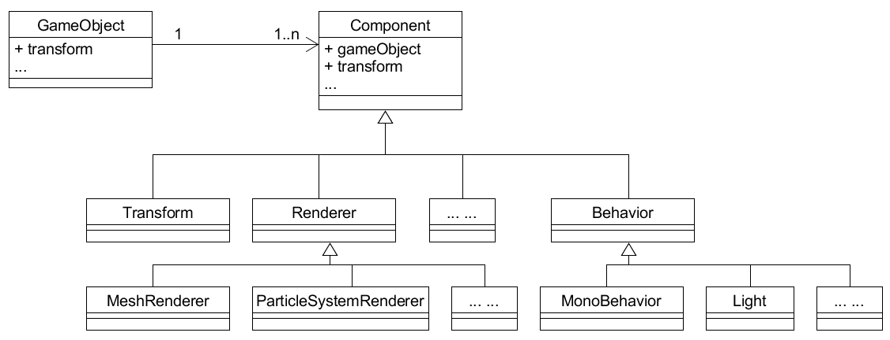
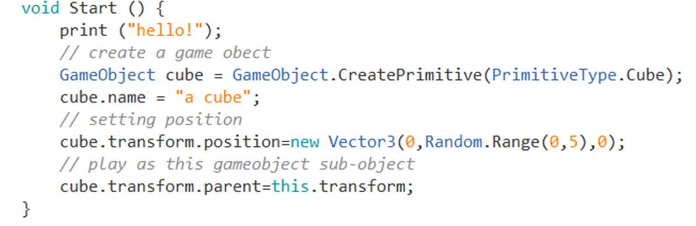
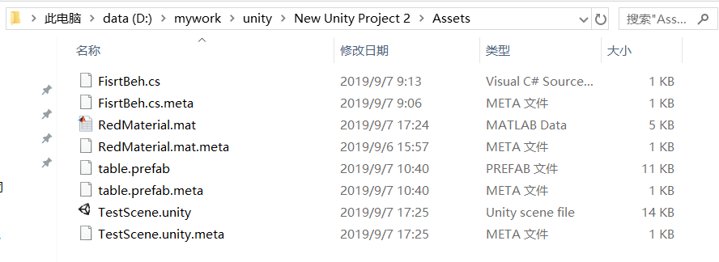

二、离散仿真引擎基础
Contents
You can’t connect the dots looking forward; you can only connect them looking backwards
— Steve Jobs, Stanford Report, June 14, 2005
预计时间：3-4 * 45 min
1、游戏引擎
1.1 游戏引擎概念与结构
A game engine is a software-development environment designed for people to build video games.
根据这个定义，从 Construct2 到 Unreal Engine 都是游戏引擎。因为 EPIC Game 能够提供电影艺术级别效果，能一下就抓住你的眼球，所以 Unreal Engine 才是学生们眼中引擎是。与之相比，而 Construct2 等引擎尽管默默无闻，但也是无数游戏设计师的最爱。
游戏引擎产生了如此难以置信的精美而“真实”的场景画面，几乎每个人都梦想能开发这样的引擎！
虚幻引擎官方广告
虚幻引擎 效果好，强调游戏技术多领域发展，真想废了 Unity 啊！
简而言之，游戏引擎 是一组游戏运行部件以及软件工具的集合。随着技术进步，多数现代游戏引擎都包含以下部件，游戏引擎架构如图所示：

如上图所示，游戏引擎分为两个层次：
游戏内容层：一组工具管理游戏需要的数据
游戏引擎层：一组游戏运行部件，支撑游戏的运行与人机交互
尽管不同厂家的引擎性能差别巨大，每个部件功能也不同，其基本原理和使用方法基本一致。特别的，现代游戏都是数据驱动的架构，即游戏代码工作量一般不太大，游戏的行为、规则主要由数据驱动。
1.2 游戏引擎产生与分类
早期游戏引擎是在游戏开发过程产生的。例如：id TECH 制作了游戏 《德军总部3D》、《Doom 3》（毁灭战士）、《Quake》（雷神之锤）等大卖的 3D 游戏，同时也把 3D 游戏的核心部件以及相关工具卖给其他游戏公司或电影制作企业。比较著名的就是 Quake engine，它的作者 约翰·卡马克 是开源运动的支持者，你可以下载源代码与各种资源。
约翰·卡马克
id TECH 联合创始人(John Carmack)。现在已经加入 Oculus Rift 团队，并且担任首席技术官一职。
Oculus 是美国 AR/VR 技术创新公司
早期引擎
早期游戏引擎都是以动画与渲染为核心，并没有使用现代显卡技术。
PC与游戏机专业游戏引擎
以下是一些商业引擎与代表作：
| 引擎 | 代表作 |
|---|---|
| 虚幻/Unreal | 《战争机器》 |
| Cry Engine* | 《Crysis》 |
| 寒霜/Frostbite | 《战地》 |
| Infinity Ward | 《使命召唤》 |
| EGO | 《尘埃2》 |
| id TECH | 《DOOM3》 |
| Source | 《半条命2》 |
| X-Ray* | 《潜行者》 |
| Havok Vision | 《哥特王朝》 |
| Quake/idTECH | 《雷神之锤》 |
| Chrome4* | 《狂野西部2》 |
| MT framework | 《生化危机5》 |
| Gamebryo | 《上古卷轴IV》 |
| Jupiter EX | 《 F.E.A.R》 |
* 顶级特效引擎，需要强大的 CPU 和 GPU（甚至超级计算）支持。
基础游戏引擎开源后，具有实力的游戏公司一般都对外宣称拥有自己的游戏引擎。因此，要学好游戏开发，要点是强化游戏引擎知识，而不是简单的追随大厂如 EPIC（Unreal）、EA（Frostbite）这些产品。
要点
游戏引擎核心部件几乎 100% 由 c 和 c++ 实现。因此要进入游戏引擎开发的核心，c语言、数学、算法、计算机图形学是基础。 如果要深入 AR/VR，SLAM 、计算机视觉与理解等技术是重要内容。
因此游戏编程技术仅是游戏开发的一个方面，学好相关课程很重要。
移动端游戏引擎
手机端3D游戏引擎几乎是 Unity3D 一家独大。Unity Technologies 在PC、游戏机平台的游戏大厂比，难以竞争。就借助一款 mono 跨平台 .net 实现框架软件（类似java虚拟机），把它的游戏引擎部署到几乎任意的操作系统上，特别在手机平台上获得成功！
众多的开发者倒逼 Unity 成为一家专业提供游戏引擎与资源服务的公司。与传统游戏引擎比 Unity 3D 有着强大的开发工具和比较完善的服务社区，不仅是游戏入门学习的首选，也是 3D 手游开发的最佳工具之一。
Unity 的成功吸引了其他企业进入手游市场，其他包括：
- cocos 3d （cocos 2d 的扩展）
- Unreal
面向游戏设计师的游戏引擎
简单一些，就是几乎不用写代码（交互编程，可视化编程）的游戏引擎。常用于非计算机专业人员游戏入门、做游戏 demo 和 testing、编写 html5 小游戏等
- Construct2
- GameMaker: Studio
- GameMei
网页平台（HTML5）游戏引擎
具体说应该是 WebGL 开发的副产物，为展示新一代互联网图形基础设施而开发，并逐步走向流行。
- three.js WebGL 官方效果展示项目
- babylon.js 目前发展较好的项目
开源游戏引擎
很多公司游戏引擎都是基于开源引擎而建，因此有必要了解它们
- Quake engine 系列
- OGRE
- Panda 3D
- Yake
一些公司，开源了部分基础代码以获得同行信任，如：
- Unity 3D
- Torque
2、游戏引擎核心-离散仿真
游戏就是模拟世界或构建虚拟世界。用计算机技术呈现现实或虚拟世界的动态场景，统称“离散仿真系统”
2.1 离散仿真的程序直观
这是一个简单的游戏世界，飞机打坦克的场景，如图所示：

为了呈现炮弹打击坦克的过程，

需要不断计算炮弹的位置，并在屏幕上画出炮弹。当游戏的引擎每 1/60 秒计算出所有游戏对象的位置、形态，并在屏幕上画出来，我们就看到了如电影一般飞机打坦克的动态场景。
每次计算，引擎必须检测炮弹是否与坦克发生碰撞，如果发生碰撞，则需产生碰撞事件供游戏程序进一步处理。
游戏循环
先看仿真系统底层运作的伪代码，在游戏引擎中称为游戏循环（Game Loop）：
|
|
难以置信的简单。微软 XNA 游戏引擎的基本框架就是这样，如图所示：

所有，XNA 游戏编程的模板如下：
|
|
- GraphicsDeviceManager 图形设备管理器，用于访问图形设备的通道。
- GraphicsDevice 图形设备。
- Sprite 精灵，绘制在屏幕上的的2D或3D图像，比如游戏场景中的一个怪兽就是一个Sprite。
- SpriteBatch 它使用同样的方法来渲染一组Sprite对象。
既然游戏执行过程是固定的，但每步骤的具体内容是用户定义的，这就是“设计模式”教材上典型的 模板方法模式！
模板方法模式
模板方法（Template Method）模式的定义如下：定义一个操作中的算法骨架，而将算法的一些步骤延迟到子类中，使得子类可以不改变该算法结构的情况下重定义该算法的某些特定步骤。【参考来源 C语言中文网 】
游戏循环实现非常复杂，模板方法使得程序员在一般情况下仅需关注游戏对象 Update 实现即可。
尽管现代游戏引擎的游戏循环非常复杂，但作为开发者必须明白，所有复杂的代码均建立在这样简单的基础代码之上。
游戏循环与多线程
游戏循环能只能单线程完成，单 CPU 能力与 GPU 能力对游戏软件最重要。因为：
- 窗口设备相关句柄不是多线程安全的
- 数据依赖关系的约束使得游戏资源创建、修改、渲染、卸载必须有序执行，例如：Draw阶段被Draw对象的属性不能改变，即与Update阶段不能同时进行；
2.2 离散仿真与离散事件仿真
“Discrete”是离散，为了研究一个系统的动态，计算机必须在某个时间点计算系统状态。比如研究对象进入系统和离开系统的时间点，进入队列和离开队列的时间点，开始加工和完成加工的时间点等等。这些时间点在时间轴上构成离散而非连续的序列，系统状态仅在离散的时间点上被观察到发生变化。
离散与连续
系统状态变化可能是离散的、也可能是连续的。
但游戏程序只能在离散的点上计算游戏对象，于是游戏引擎各种各样问题就产生了！
离散仿真
为了研究系统动态，时间被分成为若干小的时间片，系统状态被这段时间内发生的系列活动而改变。称为基于活动的仿真（activity-based simulation）
- 时间轴（线） 为了解释或预测系统变化的规律，必须选择合适的时间轴并在上选择一组点观察或记录系统状态。不同系统时间轴选择不一样，如模拟古代气候变化，可能以千年为单位；研究微观世界，如化学反应则可能以纳秒为单位。对于游戏，可能有两个以上时间轴
- 游戏时间。即虚拟世界的时间系统，如：石器时代、铁器时代、火器时代、太空时代
- 渲染时间。即游戏引擎的时间系统，通常用 Tick 表示从游戏开始游戏循环的次数。
- FPS（Frames PerSecond） 是视频游戏最重要的概念，它是每秒钟游戏循环执行 DrawGameObjects 的次数。如果低于 30次/秒，玩家则会看到明显的动作不流畅。在特定性能机器上，它是评价游戏优化的指标；在不同机器上，它是机器游戏性能的综合指标。
- 系统状态：某一时刻，系统中所有对象、及其属性与关联。
离散仿真存在一些显而易见的问题：
- 跳帧。无论 UpdateGameObjects 或 DrawGameObjects 花费的时间过多，就会产生帧间隔超出给定时间问题。
- 穿越。可能失去两次计算之间存在重要的状态，例如：当炸弹速度很快时，在上一个时刻，计算到炸弹在坦克上面，接下来一个时刻炸弹已坦克下面，问题是坦克打中了吗？这时，不仅需要计算两个时刻对象状态（位置），而且要判断炸弹轨迹与坦克轨迹是否相交？然而，轨迹用直线表示，还是进一步内插补计算？
这里仅给出游戏离散仿真中两个典型问题。你必须明白，无论游戏编程或引擎开发都需要认真学习相关知识，避免 “too young too naive”
离散事件仿真
早期游戏引擎最大的问题是硬件性能不足，游戏优化能力决定了游戏的成功。在硬件性能冗余、面向对象的时代，用 XNA 这样的引擎从头开始编写管理成百上千游戏对象的游戏是什么感觉？
- 需要用代码和合适的数据结构组织游戏对象，包括创建、删除等
- 需要用代码计算每个时刻游戏对象属性
- 需要用代码确定绘制游戏对象的顺序
程序员做2D小游戏时 “一切控制在手中” 的好感觉将荡然无存。因此，需要对游戏离散引擎进行改造，既要合适面向对象的编程，也要将游戏设计与优化工作自动化与工具化，在游戏执行性能可接受的条件下，使得游戏开发难度减低到普通程序员可以接受的程度。Unity 3d 在这方面工作使得游戏开发得到普及，EPIC（Unreal） 等大厂也积极跟进，谁也不乐意被开发者抛弃！
Unity的技术
C# 是跨平台支持反射的语言中性能最好的。Unity 通过对游戏循环合理的包装，利用反射技术，使得用户仅需关注游戏对象更改的业务逻辑，定义游戏对象模板中指定的消息处理程序/方法，即可编出性能不错的游戏程序，使得游戏开发变得异常简单。
2017年，《守望先锋》开发团队提出 ECS 构架，使得 c 和 c++ 编游戏能相对容易，且保持高性能。
离散事件仿真（Discrete Event Simulation，缩写为DES）：为了研究系统动态，系统中对象处理在内部（如对象状态改变产生事件）、外部事件，并在事件处理过程中进一步引发系统状态改变产生系列事件。称为基于事件的仿真（Events-based simulation）。与离散仿真不同，我们是在特定事件（条件）中观察并改变系统状态。
现代游戏引擎一般都是离散仿真与离散事件仿真混合模型。先给出一个更接近现代游戏引擎的伪代码：
|
|
尽管这个代码与实际代码差别很大，它体现了以下一些事实：
- 注意方法的首字母大小写，小写表示内部方法，大写表示公有方法。显然，这时编程模板从游戏循环级别改为对象级别，即游戏对象有 Start 等方法
- 游戏对象的数据结构是引擎管理的，用户可以用工具或代码（通过API）管理游戏对象。例如，用户通常不能直接析构游戏对象，因为你在某个对象的 Update 中析构一个游戏对象，导致其他对象的 Update 中引用该对象出现 Null 错误！
- 游戏渲染自动化了，程序员并不需要干预渲染过程
- 你可能会看到游戏对象模板中有 OnXXX(…) 这样的事件处理句柄。例如： OnCollision(…) 表示这个对象与其他对象碰撞时，该句柄被调用。因为当你使用与引擎集成的物理模块时，物理模块一旦发现游戏对象碰撞，就会自动触发它。类似的事件句柄很多，至于不同事件在什么时机执行，这是复杂的话题。
现代游戏引擎由于要管理许多游戏对象，空间管理与性能优化无疑是巨大的挑战。所幸的是程序员编写游戏正在一步步变得更简单！
3、Unity 离散仿真引擎实现与应用
提示
Unity 的使用与操作细节请移步 Unity 用户手册，这里仅关注相关内容
本课程从 Unity 4.x 版开始，到 5.x 版，到 2017 版，以至今年 2020.x 版，许多内容都有不少差异。请以官方手册为准！
今年使用 2020.1.4 版本！
注意事项
翻译总是落后技术发展的。
3.1 Unity 3D 操作快速入门
1、了解 Unity 3D 基本界面
如果你是新手，先阅读 Working in Unity
安装完成后，创建一个 3D 项目。Unity 主界面 如图所示：

- （A）工具栏（Tools Bar）：工具。新手会用运行、停止即可
- （B）层次视图（Hierarchy Window）：内存中 游戏对象的组织。
- 游戏运行时需要的游戏对象
- 参见 菜单 -> GameObject
- （C）游戏视图（Game View）：游戏对象运行的窗口
- （D）场景视图（Scene View）：编辑游戏对象的窗口
- （E）属性视图（Inspector Window）：观察游戏对象和资源属性的地方
- 游戏运行时，可实时修改属性改变游戏对象行为，但不会影响设计内容
- 参见 菜单 -> Component
- （F）项目视图（Project Window）：管理游戏项目资源的地方。
- 创建游戏需要的材料A
- 参见 菜单 -> Assets -> Create
2、初识游戏对象与资源
任务是在游戏场景中放置一个物体（如 Cube）并赋予红色，运行游戏。
操作 02-01 ，GameObject 练习
- 使用 菜单 -> GameObject -> 3D Object -> Cube 或 在层次视图点右键（上下文菜单 -> 3D Object -> Cube）
- 层次视图增加了 Cube 游戏对象， 同时我们在场景视图中看到了一个白色的正方型
- 选择 层次视图 中主摄像机对象（Main Camera）, 场景视图右下方就是摄像机拍摄的画面
- 使用 菜单 -> Assets -> Create -> Material 或 项目视图（Assets）的上下文菜单 -> Create -> Material
- 项目视图（Assets）下新增了一个白色的材料，点击它观察属性视图
- 在属性视图找到 Albedo 并双击颜色板，出现一个 Color 窗口
- 选择一个你喜欢的颜色，如红色
- 项目视图（Assets）中该材料色彩变化
- 重命名为 RedMaterial
- 拖动（Drag） RedMaterial 放落（Drop）Cube（层次视图或场景视图）上，Cube变成红色。
- 点击工具栏 Play 按钮运行游戏，游戏视图出现（正是摄像机拍摄到的内容）
- 再点 Play 按钮 终止游戏
基本概念：
- 游戏对象（GameObjects），游戏程序空间中的事物，可能是 Empty（空，最有用的事物）、2D、3D、光线、摄像机等
- 游戏资源（Assets），构造游戏对象、装饰游戏对象、配置游戏的物体和数据。即序列化的或存储格式的游戏对象或数据
3.2 Unity 离散仿真引擎快速入门
1、游戏对象的表示
Unity 表达游戏中物体的编程对象主要涉及三种类:
- GameObject: Unity 场景中所有实体的基类
- Component: 能附加到游戏对象的部件的基类
- Component 的各种子类。包括空间与变换部件 Transform、各种 渲染部件Reander ，脚本部件 MonoBehaviour 的子类等等。
它们之间的关系如图所示：

直观上，游戏对象继承非常直观，例如：96A主站坦克继承抽象坦克，抽象坦克继承游戏对象基类，似乎是天经地义的设计。 然而，现实世界太复杂，（1）难以用继承机制描述各类事物；（2）多重继承太复杂；（3）继承、多态这种机制会导致对象行为变得异常复杂。为了保证引擎的通用性，我们用 Component 装饰游戏对象，赋予它各种能力。
要点
游戏对象一般不能被继承！！！
这里，游戏对象用一组部件来表达不同的方面的要求，能更好满足游戏世界的复杂性，提升游戏对象的灵活性，便于与引擎协作。例如：游戏对象位置等由 Transform 管理，形态网格由 Mesh 管理， 绘制由 Render 等部件协作完成，行为则由 MonoBehaviour 的子类管理。这些部件，仅需要时才加入游戏对象的实例（实体）。
要点
组合优于继承
为什么要这样设计？在设计模式的装饰模式器描述了这样的设计场景：“装饰器模式（Decorator Pattern）允许向一个现有的对象添加新的功能，同时又不改变其结构。” 动态地给一个对象添加一些额外的职责。就增加功能来说，装饰器模式相比生成子类更为灵活。
这个设计充分体现了这条软件设计原则“组合优于继承”。然而，众多的部件对象也带来管理复杂性与性能优化问题。
【注】装饰器模式的案例多数是该设计场景的特例，“Wrapper”模式。
现在，做一些任务验证上图设计:
操作 02-02 ，GameObject 与 Component 关系练习
- 在层次视图选择 Cube 游戏对象
- 在属性视图观察它有哪些部件？
- 修改 Tranform 部件中 Postion 的 x，y，z。观察游戏对象在场景视图中的变化
- 在属性视图点击 “添加部件（Add Component）” 按钮，… 有哪几大类部件？
- 在层次视图选择 Cube 游戏对象，在属性视图观察它有哪些部件？
2、赋予游戏对象行为
游戏对象行为是游戏对象的一个部件，都是脚本部件 MonoBehaviour 的子类。
下面的任务就是创建一个简单的脚本，并挂载到 Cube 对象。
操作 02-03 ，c# Script 编写练习
- 在资源视图创建一个脚本。上下文菜单 -> Create -> c# script
- 修改脚本名称 FirstBeh。然后双击它，编辑它。
- 修改代码如下：
|
|
你可能注意到 FisrtBeh 是 MonoBehaviour 的子类。我们怎么知道引擎调用了哪些方法和事件呢？ MonoBehaviour 基类就是一个编程模板，Unity API 的 Messages 一节给出了它可以处理的引擎回调（callback）与事件句柄（OnXXX）。
由于 Update 在每个游戏循环都会被调用，为了避免大量输出，所以暂时注释了。
- 如果这个代码没有编译错误，现在可拖动（Drag）它到任何游戏对象（如 Cube）上，属性面板自动添加该部件。
- 运行游戏
- Console 面板（control + shift + c）中，你看到消息顺序是 Enabled，Start。
- 点击 Cube 属性面板最上面 checkbox，你得到消息 Disabled
- 点击 Cube 属性面板最上面 checkbox，你得到消息 Enabled
- 点击 FisrtBeh 部件前面 checkbox，你得到消息 Disabled
- 点击 FisrtBeh 部件前面 checkbox，你到消息 Disabled
- 结束游戏，你得到消息 Disabled
修改代码，让 update 中语句执行， 重复上述过程。
注意事项
脚本文件名称必须与类名一致，否则 …
3、游戏脚本对象方法与事件执行顺序
你可能想知道这些消息在游戏循环的什么时候发生，它们之间的顺序，Unity 官方手册这样描述了游戏循环、事件、引擎部件之间的关系：
这是一张可怕的大图，对入门者极其不友好。知道以下事件就够用了：
| 事件名称 | 执行条件或时机 |
|---|---|
| Awake | 当一个游戏对象实例被载入时Awake被调用，或者脚本构造时调用。 |
| Start | 第一次进入游戏循环时调用 |
| FixUpdate | 每个游戏循环，由物理引擎调用 |
| Update | 所有 Start 调用完后，被游戏循环调用 |
| LastUpdate | 所有 Update 调用完后，被游戏循环调用 |
| OnGUI | 游戏循环在渲染过程中，场景渲染之后调用 |
注意事项
由于游戏对象与部件之间是组合关系，Compnonent 对象子类的构建、释放必须由对应 GameObject 完成。程序员不能创建它们
思考题
为什么不能让程序员用 new 创建部件？
3.3 游戏对象的组织、预制与场景
1、用脚本创建 Primitive 游戏对象
操作 02-04 ，创建 Primitive 游戏对象
- 修改 FirstBeh 类的 Start 方法，如图所示

- 运行游戏
- 展开层次视图，找到创建的游戏对象
- 终止游戏
- 在层次视图中观察，运行期的变化都消失了！
菜单能作的工作，利用 API 编程也能做到！
2、游戏对象组合与预制
如果我们每次都从基础游戏对象构建游戏，这需要多少代码，而且不易于修改。我们可以把基本的游戏对象组合起来，制作成 预制，以后把预制当作一个游戏对象使用。
要点
预制（Prefabs），文件存储的游戏对象与属性的组合，可一次性方便地加载到内存。
如果说基本游戏对象是原材料，预制就是半成品。因此，预制的概念在 Unity 中及其重要，也是游戏制作最基础的知识！
下图就是本节的任务，制作一个座椅的预制

操作 02-05 ，创建 Prefabs
- 将 Cube 命名为 table
- 从菜单创建新的 Cube 游戏对象，并命名为 chair
- 将 chair 拖动并放置在 table 之上，我们发现 chair 变为子对象
- 改变 chair 位置（如 position.x = -2）；大小（如 scale.y = 0.2)
- 采用复制粘贴，生成其他三个 chair 并修改位置
- 【重要】将 table 拖动并放置 在 Assets 面板之上，就生成了一个 table 预制
- 将 table 预制 拖动并放置 到层次视图，我们观察到座椅游戏对象同时生成了
- 修改 table 的位置，chair 如何变化？
提示
在层次视图中，预制的颜色与普通游戏对象不同！！！
思考题
父对象坐标与子对象坐标的关系（世界坐标、相对坐标）？
事实上，游戏是预制好的对象的组合，代码是粘合它们的胶水，控制作这些事物的变化
思考题
从面向对象设计角度，游戏对象在内存中树形组织结构，称为“组合模式（Composite Pattern）”。例如，行政区是一个抽象概念，国家、省、市、县都是行政区。这些行政区对象按树形结构组合，每个高级别的行政区都由几个低级别的行政区组合构成。
许多同学（包括网上绝大多数博客）都从编程特征来理解设计模式，而不像设计模式作者们那样从现实社会设计问题中去理解，忽视具体问题的业务场景与上下问。23 种面向对象设计模式的强大，就是这么多年来大家都觉得足够用了！
3、游戏场景、预制与资源
游戏场景的保存与恢复
与戏剧一样，一个游戏由一个与多个场景（Scenes）。场景中包含背景、静态游戏对象与动态游戏对象。Unity 场景视图就是场景中所有事物的可视化设计器。层次视图则是从对象的角度，描述了游戏对象树林这种数据结构。
操作 02-06 ，创建与恢复 Scene
- 菜单 -> File -> Save Scenes
- 将设计好的场景起名 TestScene，这时在资源中看到 Unity 图标的场景
- 在当前设计场景中，添加、删除或修改游戏对象
- 双击资源中场景图标，选不保存当前场景，这是场景恢复到保存时的状态
资源、预制与场景
到开游戏项目资源所在的目录，例如： D:\mywork\unity\New Unity Project 2\Assets

发现每个游戏资源都对应了响应的文件。因此，资源是存在的硬盘的文件。
- 脚本（.cs）。用文本编辑器修改它，属性编辑器中代码会同步更新哦！
- 材料（.mat）, 预制（.frefab）, 场景（.unity）
对于 Unity 预知和场景都是一样的文件。预制是游戏对象及其树上所有对象的文本定义（可以翻译成任何文本，如 YAML，XML，JSON]）;场景是场景中所有游戏对象的文本定义。默认它们以压缩格式保存。
【高级话题】文本化资源文件 Text-Based Scene Files
3.4 游戏对象动态构建
游戏代码的基本任务是根据资源动态加载游戏对象，并控制它们。本次的任务是掌握用代码创建游戏对象的基本技巧。
首先创建如下代码资源 LoadBeh：
|
|
注意事项
随着版本更新，Unity 越来越喜欢使用模板，可能导致部分版本不兼容。例如：Instantiate 方法的定义 public static T Instantiate(T original, Transform parent);
操作 02-07 ，从预制创建游戏对象
- 在仅场景中仅保留摄像机和光源
- 菜单 -> GameObject -> Create Empty
- 将空（PlaceHolder）游戏对象命名为 init
- 将 LoadBeh 拖放至 init
- init 的属性面板多出一个 Load Beh（Script） 的组件，有一个属性 res
- 将 table 预制拖放至 res 属性
- 运行游戏
这时，我们将观察到座椅随机出现在 Game 视图中。
编程练习 02-08，使用砖块构建一面5*10 的墙
编程要求与提示：
- 阅读 Instantiate 方法 API 中的案例
- 使用 Cube 制作一个长方形带材料的预制 brick
- 编写一段代码 BuildWall 生成 5*10 的墙
4、小结
- 离散仿真引擎原理
- 离散仿真与游戏循环
- 离散事件仿真（DES）
- Unity 离散仿真引擎实现
- 游戏对象表示：游戏部件（装饰模式）
- 游戏对象组合（组合模式）
- 游戏脚本（模板模式）
- 预制与资源
- 游戏对象的动态构建
5、作业与练习
Unity 常用资源
- Manual https://docs.unity3d.com/Manual/index.html
- 中文参考 https://docs.unity.cn/cn/current/Manual/index.html
- UML 绘图工具 http://www.umlet.com/changes.htm
作业内容
1、简答题
- 解释 游戏对象（GameObjects） 和 资源（Assets）的区别与联系。
- 下载几个游戏案例，分别总结资源、对象组织的结构（指资源的目录组织结构与游戏对象树的层次结构）
- 编写一个代码，使用 debug 语句来验证 MonoBehaviour 基本行为或事件触发的条件
- 基本行为包括 Awake() Start() Update() FixedUpdate() LateUpdate()
- 常用事件包括 OnGUI() OnDisable() OnEnable()
- 查找脚本手册，了解 GameObject，Transform，Component 对象
- 分别翻译官方对三个对象的描述（Description）
- 描述下图中 table 对象（实体）的属性、table 的 Transform 的属性、 table 的部件
- 本题目要求是把可视化图形编程界面与 Unity API 对应起来，当你在 Inspector 面板上每一个内容，应该知道对应 API。
- 例如：table 的对象是 GameObject，第一个选择框是 activeSelf 属性。
- 用 UML 图描述 三者的关系（请使用 UMLet 14.1.1 stand-alone版本出图）
- 资源预设（Prefabs）与 对象克隆 (clone)
- 预设（Prefabs）有什么好处？
- 预设与对象克隆 (clone or copy or Instantiate of Unity Object) 关系？
- 制作 table 预制，写一段代码将 table 预制资源实例化成游戏对象
2、 编程实践，小游戏
- 游戏内容： 井字棋 或 贷款计算器 或 简单计算器 等等
- 技术限制： 仅允许使用 IMGUI 构建 UI
- 作业目的：
- 了解 OnGUI() 事件，提升 debug 能力
- 提升阅读 API 文档能力
3、思考题【选做】
- 微软 XNA 引擎的 Game 对象屏蔽了游戏循环的细节，并使用一组虚方法让继承者完成它们，我们称这种设计为“模板方法模式”。
- 为什么是“模板方法”模式而不是“策略模式”呢？
- 将游戏对象组成树型结构，每个节点都是游戏对象（或数）。
- 尝试解释组合模式（Composite Pattern / 一种设计模式）。
- 使用 BroadcastMessage() 方法，向子对象发送消息。你能写出 BroadcastMessage() 的伪代码吗?
- 一个游戏对象用许多部件描述不同方面的特征。我们设计坦克（Tank）游戏对象不是继承于GameObject对象，而是 GameObject 添加一组行为部件（Component）。
- 这是什么设计模式？
- 为什么不用继承设计特殊的游戏对象？
作业提交要求
- 仅能用博客或在线文档提交作业，建议使用 Gitee 提交代码和作业。不能使用docx、pdf等需要下载阅读的格式
- deadline （通常1周内）
Author 潘茂林
LastMod 2020-08-30